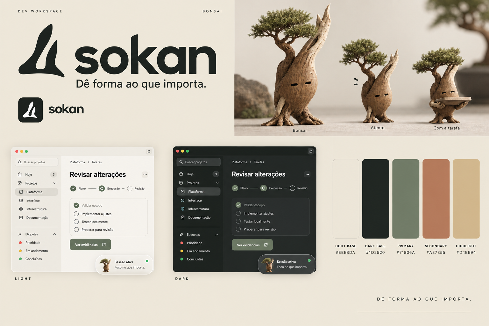

Sokan so-KAN
Dê forma ao que importa.
Juniperus chinensis var. sargentii
Do estilo de bonsai com dois troncos e uma raiz compartilhada. Para o produto: autonomia com direção comum.
#EEE8DA#1D2520#71806A#AE7355#D4BE94Por que considerar: Melhor conexão conceitual com o app: cultivar o contexto, orientar o trabalho e revisar o resultado.
Espécie, mascote e pontos de atenção
Referência real
Juníperos de Itoigawa apresentam troncos retorcidos, madeira morta e folhagem em massas; o estilo sokan reúne dois troncos desiguais numa base comum.
Shimpaku é uma referência valorizada no bonsai; não foi estabelecido como uma das espécies mais raras do mundo. A singularidade aqui está na forma, na madeira exposta e nos exemplares antigos.
Fonte botânica · Referência complementar
Personagem em ação
Seguro, paciente, criterioso. Um pequeno guardião de madeira, com humor seco.
Na interface, inclina a copa enquanto acompanha uma execução; para revisão, ergue a pequena bandeja com o trabalho. Em posts: a série «Dar forma», mostrando antes e depois.
O que pesar
A textura realista do mascote precisará de uma versão simplificada para 24–32 px. O nome exige testar a pronúncia em português.
Busca preliminar encontrou uso de Sokan por uma empresa no LinkedIn; não houve verificação de disponibilidade de marca. Ver uso encontrado